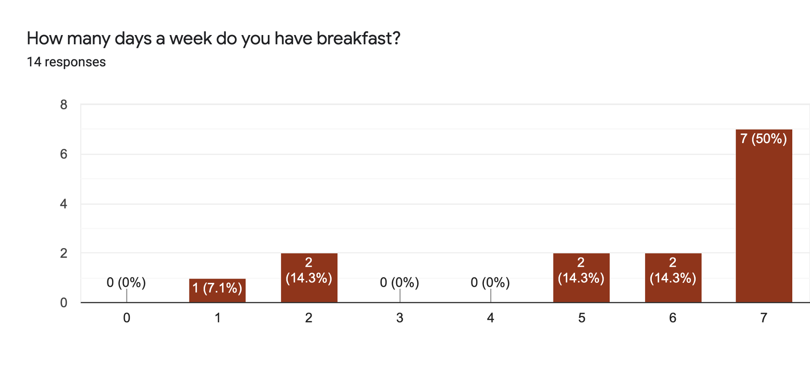
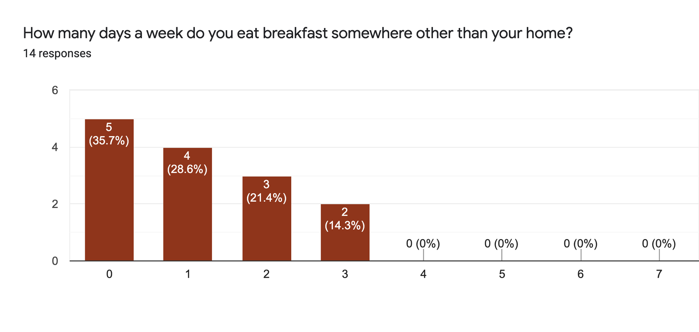
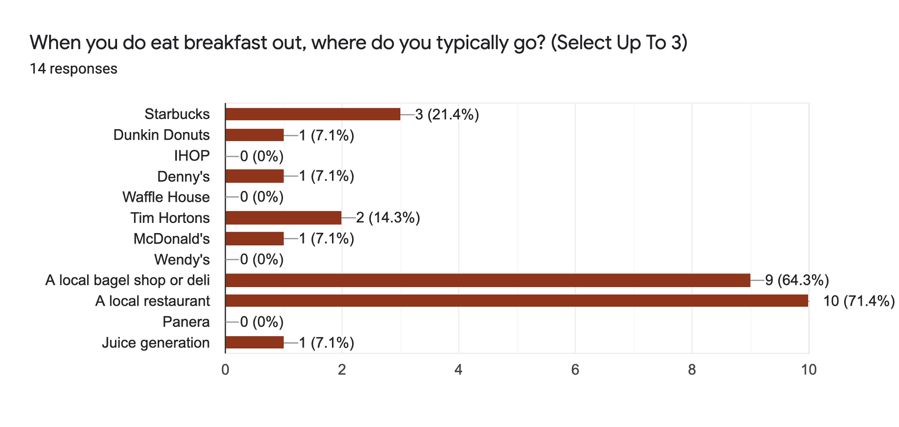
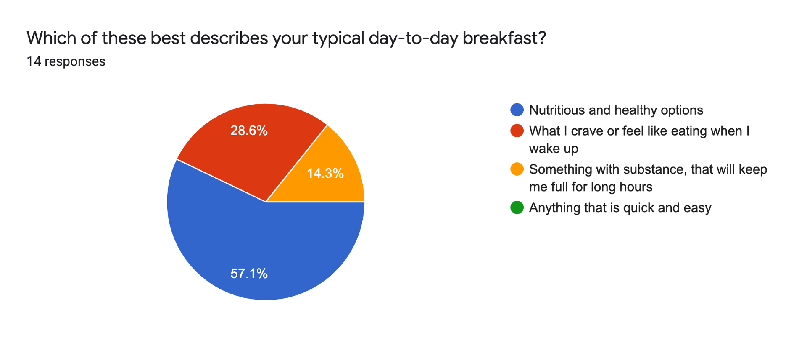
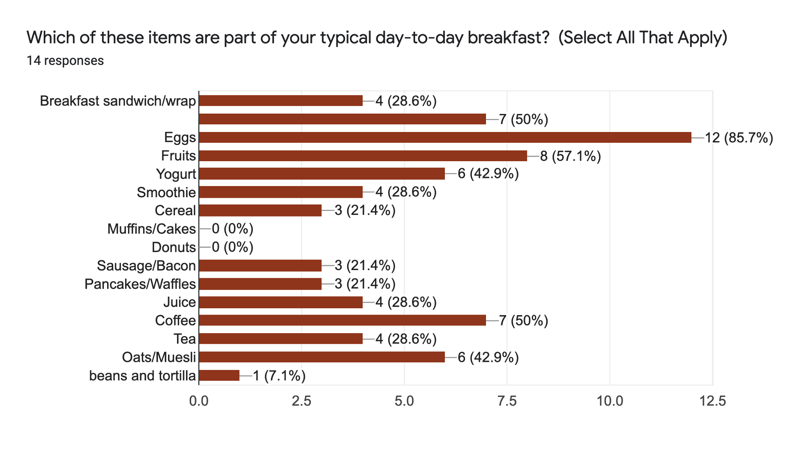

Here are some insights...
50% of respondents have breakfast every single day, and majority has almost every day.
Most respondents always have breakfast at home, but ~50% will go out for breakfast once or twice a week.
Local restaurants and delis are the most popular destinations for breakfast out of home.
Most respondents, 57%, are health conscious when it comes to their breakfast, but 28% choose to eat what they crave once they wake up.
Eggs, fruits, bread with some sort of spread and coffee are the most popular breakfast items, respectively.
